| 目は1分でよくなる! ─あなたの目がよみがえる7つの視力回復法 | |
| 今野 清志 | |
| jiyuukokuminnsya (2014) | |
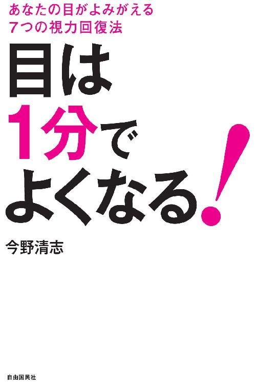
はじめに
この本でご紹介する「今野式 ７つの視力回復トレーニング」は、中医学をもとに西洋医学のエッセンスも加えた、誰でも自然に行えるエクササイズです。
社会は日増しにＩＴ化が進み、便利な世の中になりました。
しかし、それに伴い、視力を奪う〝目の酷使〟の時代になってしまいました。
それだけではありません。人間が本来動物で生きるための五感が、ことごとく、そぎ落とされ、鈍くなり、あるいは失われつつあるのです。
そこで私は、それを解消すべく、人間の動作
跳ぶ、跳ねる、掻く、さする、叩く、押す、吸う、吐くなど
子どもの時に身に付けているこれらの自然な動作を、視力回復のためのエクササイズに生かしています。
実は、一人の患者さんがきっかけで、この視力回復法は生まれました。
詳しくは本文中でご紹介しますが、視力が０・０１以下で、ほとんど物が同化して見えなかったのです。あらゆる病院を渡り歩き、結局、先生方も、本人もあきらめていた視力でした。
その方が、
「あっ、時計！」と叫びました。
５メートル離れた壁にある時計を、指で指して興奮していました。
今まで全く見えていなかった時計の存在が分かったのです。
私は、「えっ、本当？ 本当に見えるの？」と何度も聞き返しました。
本当に、たった１回で、時計が見えるようになったのです。
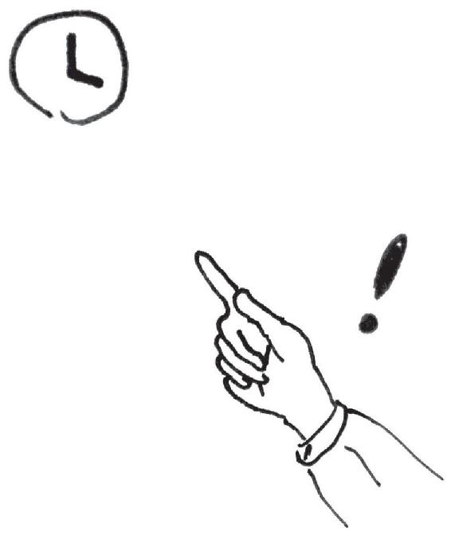
人間の自然治癒力の素晴らしさを実感した瞬間でした。
この時の視力回復法が基礎となり、何十年も研鑽してきました。
この本で、皆さんに、その技を紹介します。
視力回復を諦めていた人に、真の目の情報をお届けしたい。
一人でも多くの方に、視力回復に興味を持ってほしい。
そして、人間の自然治癒力の素晴らしさを実感してほしいのです。
＊
私たちは、たとえ目が悪くなっても、メガネをかけたり、コンタクトレンズを入れる、または手術をすれば、通常の日常生活には困ることはありません。
しかし、中にはどうしても裸眼での視力を回復しなければならない人もいます。
飛行機のパイロットやキャビンアテンダント（ＣＡ）と言われる方々です。
あるとき私の治療院に、２２歳の背の高い女性（優子さん＝仮名）がやってきました。
彼女はＣＡの試験を受けている最中で、筆記試験、面接はすべてクリアしたのですが、視力だけがどうしても基準に達しないというのです。
パイロットやスチュワーデスなどは裸眼で最低、０・１以上ないと合格できません。
メガネやコンタクトをしてはダメなのです。あくまでも裸眼です。
お客さまの命を預かるという仕事上、後部座席まで見渡せる自然な目の力が必要なのです。
今から２０年ほど前、ＰＫ法やＲｋ法やＰＲｋ法というレーシックに似た目の手術が流行りましたが、１０～２０年以上も経って、世界中でこの手術を受けた何百万人という方々の視力がいきなりダウンし社会問題になっています。
ですから、飛行機会社が裸眼にこだわるのも意味があるのです。
さて、優子さんの視力は左右とも０・０５でした。
実は、視力が０・１を下回ると視神経が細くなり、脳に伝達する視神経の働きが弱まります。モノを見るための網膜の視細胞が著しく劣化するため、視力回復は非常に難しいのです。
視力検査の日は１週間後に控えていました。
通常、１週間で視力を倍に回復することは不可能です。
でも、彼女は視力によって自分の人生が左右される岐路に立たされていました。
優子さんは愛知県に住んでいたので、東京の私の治療院に通うことができません。
とにかく１週間、死力を尽くして次のことをやってくれるようにお願いしました。
シェイク法、タッピング、さすり法、呼吸法、指圧法、瞑想法。
すべてを毎日行うよう指導しました。
通常、血流を促すシェイク法やタッピングなどだけでも、目の状態は著しく改善しますが、こうした緊急事態では、ほかでは取り入れていない瞑想法を必ず加えます。
私たちは過去に見たものを記憶として脳が覚えています。
瞑想法は、その記憶を呼び覚ますのです。つまり、目が良いときに見えていた景色や風景などを脳にイメージさせ、記憶をよみがえらせます。すると脳が当時の状態に戻すよう目のまわりの筋肉を弛緩させ、今まで見えなかったものが見えるようになるのです。
「できることはすべて伝えますから、必ず実行してくださいね」と私は優子さんに言いました。
彼女は私に言われた方法をとりいれ、毎日目のまわりをマッサージし、瞑想しました。
そして１週間後、なんと視力は０・０５から０・２にまで回復し、試験に合格したのです。
＊
この本をよめば、誰でも簡単に、１分間のエクササイズで、視力改善が期待できます。
試して合点、続けて納得。
ぜひ、生活習慣に取り入れてください。
誰もが、できることなら健康で長生きしたい。
そして、最後まで視力を失いたくないと思っているはずです。
「７つの視力回復トレーニング」を、今日から実践してみましょう。
目次

第１章 日本人は世界で一番目が悪い
世界でダントツに目が悪い日本人
日本は、世界でも有数の「近視大国」です。
統計によれば、４０代以上の日本人は、４２％近くが近視であり、アメリカ人、そして中国人の平均２２％や、４９歳以上のオーストラリア人の平均１４％に比べると、倍以上の多さになっています（参照:大野京子『眼のサイエンス 視覚の不思議』文光堂、２０１１）。
また近年、０・１以下の強度の近視の人が増え、視力低下の低年齢化も進んでいるのが特徴です。
近視の人数の多さに伴い、その他の目のトラブルを抱える人も、格段に多い日本。
実に４０００万人以上の人が、目にかんして、なんらかの悩みを持つといわれています。
国土の広さが世界第２位であるカナダの人口は、３４００万人。
比べてみると、日本ではいかに多くの人の「目」に問題があるか、わかるのではないでしょうか？
それなのに、ほとんどの人が、
「近視になるのは仕方ない」
「年齢を重ねれば老眼になるのは当然」
と、「悪くなったらメガネやコンタクトで視力を補う」といった対処療法しか行っていません。
近視は遺伝ではない
「親がメガネをかけているから仕方ない」
「両親も兄弟も近視だから、私も目が悪い」
などと、近視は「遺伝」だと考える人が多くいます。
ここでハッキリ申し上げておきましょう。
近視は、遺伝ではありません。
もちろん、例外の遺伝性もあります。しかし、遺伝でもないのに「遺伝で仕方がありません、あきらめてください」と、専門家自身が視力回復をあきらめるのは本当に残念でなりません。
これは近代の研究でも明らかになっています。
アメリカのワシントン大学教授の、フランシス・Ａ・ヤングは、エスキモーを３世代にわたって調査しました。
祖父母、両親の視力に問題はなくても、孫の代で学校に通い始め、読書の時間が増えたため、近視になった子どもの割合は５８％と半分以上を占めます。
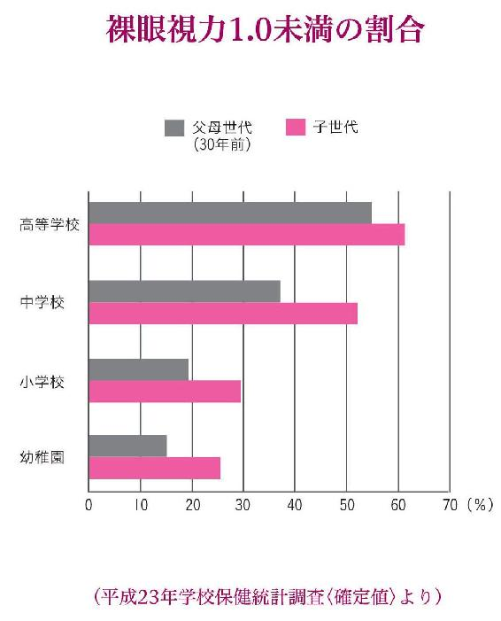
また、日本の文部省（現在の文部科学省）が、「教育白書」のなかで発表している、「児童生徒の近視率の推移」によると、昭和２４年には、小学生で、視力が１・０以下である近視率が６％でした。
ところが平成１８年には、２８％と、６０年足らずの間に、ほぼ５倍になっているのです。
もし近視が本当に遺伝するものならば、近視である児童の割合は一定でなければなりません。
６０年間で５倍に数が増えているところから見ると、環境の変化で発生している近視が、いかに多いかがわかるのではないでしょうか？
２０～３０代の緑内障が増えている
近視以外の「目」の病気も、増え続けています。
「緑内障」というと、年齢を重ねるとなるもの、というイメージを持つ方が一般的です。
ところが近年、２０代でも緑内障を発症する人が急増しています。
緑内障は適切に治療しないと、失明の原因になり得る病気であり、実際に、日本人の失明原因の１位は緑内障です。
緑内障は、「高くなった眼圧が視神経を圧迫し、視野が欠ける」病気といわれてきました。眼科で眼圧を検査し、正常値（１０～２１ミリ）以上であれば緑内障と診断されます。
ですが最近では、眼圧が正常値内であるのに、血流障害を原因とし、視神経が衰えて見えにくくなる「正常眼圧緑内障」が増え、全体のおよそ７割を占めています。
そのため、眼圧の検査とあわせて、視神経が束になっている部分を撮影し、変形していないかどうかを診る、眼底検査も行われるようになってきました。
ところがここで一つ問題があります。
眼底検査では、２００万近くある視神経の束が、半分以下の８０万程度にならないと、減っていることがわからないのです。
痛みもないため気づかずにいたところ、モノが見えなくなって初めて、あわてて駆け込んでくる患者さんがあとを絶ちません。
また、眼圧が高い緑内障の場合も、眼圧を下げる点眼薬を処方され、経過を観察する治療が主流です。何年も目薬をさしながら、悪化を食い止められず、失明寸前で相談にくる方も少なくないのです。
私が常々問題だと思っているのは、近視にしろ、緑内障にしろ、患っているほとんどの方と医療関係者が、ほんとうの原因に目を向けていないことです。
ほかの症状であれば、たとえば、脂っこいものを食べ過ぎて太ったら、食生活を変える。運動不足で内臓脂肪がついたら、歩くように心がけるなど、原因を特定して解決しようとするはずです。
悪くなったのには、必ず理由があります。
それなのに、なぜみなさん、こと「目」に関しては、
「しかたがない」
と、メガネをかけたり、目薬をさしたりするだけで納得してしまうのでしょう？
ドライアイはすごく怖い病気
また近年、特に多いのが「ドライアイ」で悩む患者さんです。
日本全国では、１０００万人近くいるといわれています。
涙が出にくくなるのであれば、
「目薬をさせばいい」
とカンタンに考える人がほとんど。
でも実はドライアイは、目の機能を衰えさせる、恐ろしい病気です。
ドライアイを、単なる肌の乾燥などと同じに考えてはいけません。
すごく怖い病気であり、生命の危機の信号なのです。
涙は目の乾きを防止するだけでなく、殺菌、洗浄し、角膜などへ酸素や栄養を補給している大事な成分です。
水のように無色透明ですが、ナトリウムやカリウム、ビタミンＡ、ビタミンＣ、そしてブドウ糖などの栄養成分、抗菌作用や免疫成分である、ラクトフェリンやＩｇＡ、細胞成長因子のＥＧＦなどを代表とする、血液と同じような成分を含んでいます。
人間はもともと海から産まれた生きものです。
私たちを育んでくれた海の成分そのものが、涙といってもいいのです。
６億年の歴史がある、この涙が出なくなるのは、人間の体の機能の衰えとして、大きな問題だと私は考えます。
ドライアイは、症状が悪化すると塗炭の苦しみとなります。
目を開けても閉じても痛み、肩こりや頭痛も併発。頻繁に目薬をささなければならないストレスから精神的にも参ってしまい、ついに仕事ができなくなってしまった方がいました。
心配した奥さまがあわてて治療に連れてこられました。
九州から何度か通っていただき、自宅でもできる治療法をお教えしたところ、数カ月後に奥さまから、
「涙が出るようになり、仕事に復帰しました」
とご報告をいただきました。
ドライアイは、最近生まれた病気ではありません。
ただ、昔は今ほど数が多くなかったのです。
近年、急激に増加している原因として、オフィス環境の３大悪である、「乾燥、酸素不足、そしてパソコンから発生するプラスイオン」があげられます。
空調の行き届いた、いっけん快適に見える、窓の開かない高層オフィスビルが一番、目にとってよくないと言っていいでしょう。
なぜなら外気を取り入れることなく、空気が循環しているだけの建物のなかは、間違いなく酸欠状態だからです。
目に必要であるばかりか、体を正しく機能させる酸素が足りないため、煙突のなかで仕事しているようなものなのです。
患者さんで都庁に勤めていた女性がいました。
「昼休みには外に出なさい」
というアドバイスを実行しながらも、なかなか目の状態が回復しなかったところ、転勤で東京都下に移ることになりました。
そこは５階建てのオフィスで窓を開けることができたため、できるだけ外気を取り入れるようにしたところ、文字通り、「目に見えて」よくなってきたのです。
「老眼」という言葉はない
近年では、緑内障ばかりでなく、老眼も若年齢化が進み、３０代の老眼患者さんも珍しくありません。
４０代以上の老眼人口は、なんと７０００万人を超えるとも言われています。
ですが、老眼も、
「目の老化だから避けられない」
と、あきらめている人が多すぎます。
患者さんで、まだ４０代なのに、「老眼」と診断されてから、めっきり老けこんでしまったという女性がいらっしゃいました。
以前は明るくて活発、友人とよく外出していたその女性は、人前でモノを遠ざけないと見えないことを恥ずかしく思い、家に閉じこもるようになってしまったのです。
「老眼」になったことで、老いを実感し、急激に気持が衰えたのでしょう。
治療して見えるようになったら、見違えるように元気になられました。
私は「老眼」という言葉を使うべきではないと思っています。
「老」眼というと、年を経ると必ずなるもの、というイメージになるからです。
私は６０歳の今でも、視力１・０を維持し、老眼の兆しもありません。
老眼は、年齢を重ねたら、誰でもなるものではありません。
まして、老眼鏡をかけることが治療だとは思ってほしくないのです。
それは一言で言えば、「目の栄養失調」です。
水晶体に栄養が足りず、硬化して、調整力が低下する症状です。
目の栄養は、酸素・血流なのです。
飛蚊症で悩むＯＬさんたち
「飛蚊症」というのは、視野に糸くずやゴミ、虫のようなものが現れる症状です。
視線を動かすと、蚊が追いかけてくるように見える場合もあることから、こう呼ばれています。
飛蚊症は、眼球の内部を満たしている、流動的な成分の一つである硝子体の組織が、活性酸素により変質することで起こる「生理的飛蚊症」と、網膜剥離や硝子体出血などの原因が潜んでいる場合があります。
ですから、
「なにか見える」
と思ったら、まず眼科医で検診することが大切です。
とはいえ、ほとんどの場合は、生理的飛蚊症です。
ただし、失明の可能性や大きな病気を引き起こす可能性は低いとはいえ、効果的な治療法が確立されていないため、眼科医に相談しても、
「慣れるしかない」
「様子をみましょう」
としか言われません。
そこで、不安になって相談に来るＯＬさんなどが、最近多くおられるのです。
カラーコーディネイトを仕事にしている女性が飛蚊症で相談に来ました。
微妙な色の違いをアドバイスする仕事なのに、いつも目の前に異物があるため、
「いつか、間違いをしてしまうのではないか」
と不安でたまらず、ストレスで眠れなくなってしまったのです。
治療を施し、自宅でできることを指導したら、１週間後には５匹はいた「蚊」が、１匹に減ったと報告してくれました。
飛蚊症もまた、なにも理由がなくて突然発症するものではありません。
きちんと原因に働きかける治療を施せば、回復が期待できます。
近視、老眼、白内障のカンタンな仕組み
ここでものが見える仕組みをカンタンにご説明しましょう。
次の図を見てください。
モノを見る仕組みはカメラに例えるとわかりやすいでしょう。
カメラの構造を単純に説明すると、レンズを通った光が、像としてフィルムに焼き付けられます。
目では瞳孔から入った光が、カメラのレンズに相当する水晶体でピントを合わせ、網膜で像として感じ取ります。
そして水晶体が厚みを変えるのを助けるのが、毛様体という筋肉です。
主に、血流障害などの原因でピント調節能力がうまく働かず、遠くのものが見えづらいのが近視、そして近くのものが見えにくいのが老眼なのです。
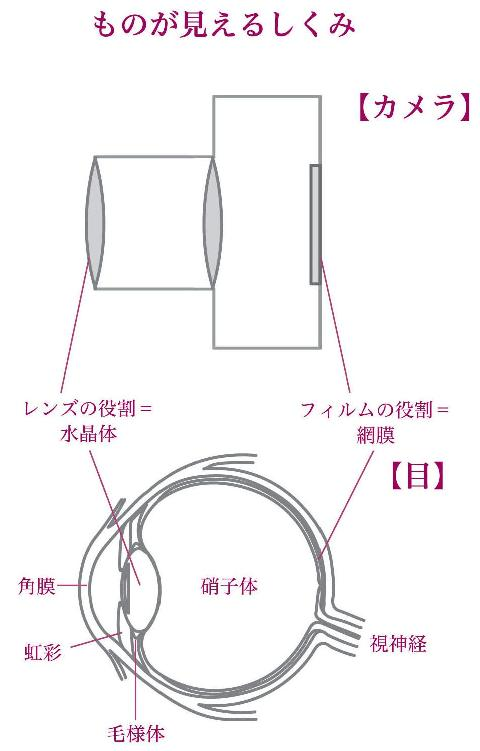
また、水晶体を構成しているタンパク質に混濁が生じるのが白内障です。
焦点を合わせづらくなる一番の原因は、水晶体に栄養がいかなくなって硬くなることです。
また、水晶体が栄養不足で新陳代謝が衰えると、濁りが生じます。
眼科医はほとんど「原因不明」か「老化」という
私の運営する治療院に来られる患者さんには、ありとあらゆる病院を訪ねたあと、解決策が見つからず、藁にもすがる思いでやってくる方が大勢います。
「失明するかもしれない」
と宣告されても、原因や解決策を提示されず、今の症状を抑える治療しか提案されない。
「〝老化〟だからあきらめるしかない」
と、改善策を教えてもらえず、しかたのないことだと説得される。
そういわれたにもかかわらず、私のもとを訪れ、想像を超える回復を見せた方が、ほんとうにたくさんいらっしゃいます。
私はなにも奇跡を起こしているわけではありません。
複雑で時間がかかる治療を施しているのでもないのです。
人間の体の仕組みを知り、症状が現れた原因をなくす。
そんなシンプルなことに従い、私たちがほんらい持っている、「よくなろう」、「元気でいよう」とする力を高めてあげる。
やっていることはそれだけなのです。
そうするだけで、悪くなったらメガネをかけるしかないと思われている、視力の９割がアップしますし、老眼、そして緑内障や白内障の多くも、進行を食い止めることができるのです。
レーシックは血流を改善してから
レーシック手術の需要が、年間数十万件と増加しています。
しかし、手術後、視力がもとに戻ってしまい、術後のフォローが無く、再治療ができない「レーシック難民」も現れ、当院に駆け込んでくる患者さんも少なくありません。
私は決して手術に反対しているわけではありません。
ご自身で納得されて受けるのであれば、日常生活を便利にする、一つの手段として選択肢に入れてもいいと思います。
ただ、手術の前に、目を健全で、あるべき状態に整えてからしてもらいたいと思っているのです。
角膜や水晶体が栄養不足で弾力を失っているのに、手術で無理矢理屈折率をあわせても、近視の原因は取り除かれていません。
すると残念なことに、早ければ３日から数週間で、視力は戻ってしまうのです。
目の栄養源は「酸素」です。そもそも酸素は、脳、内蔵、筋肉など全身の細胞の活力源であり、目も例外ではありません。
そしてその、酸素を運んでくれるのは血液なのです。
「レーシックをするなら、血流を改善してから」というのは、目の栄養状態を改善し、よい状態にしてから行えば、効果も持続するということなのです。
ただここでも、皆さんが知らない事実があります。
たとえレーシック手術のあと、視力がもとに戻ってしまっても、血流を改善することで目の状態がよくなれば、再びレーシックの効果が現れることがあるのです。
これまで相談に来られた方の多くが、目の状態をよくしたことで、手術直後の視力に戻っています。
どんな治療を施すにせよ、血流を改善しておくことは、決してムダにはならないのです。
目は心臓の次に働き者
私たちの目は、ほんとうに働き者です。
１日に、まばたきを２万回近く行い、眼筋は１０万回以上も動きます。
人間の体のなかで、これだけ動く器官は、ほかには心臓くらいしかないでしょう。
どんなにたくましいアスリートでも、１日１０万回の筋トレはできませんね。
まぶたはそれを毎日、１日も休まず行っているのです。
人間の体は、筋肉運動をすると、乳酸がたまります。
乳酸には良い方面の働きもありますが、大量の乳酸の代謝除去を乳酸蓄積が上回ると、視力に影響が出ると言われています。
乳酸は酸素によって分解され、血液で運び出されるので、酸素不足になると、疲れが取れなくなり、機能が衰えます。
もう、お分かりでしょう。
これだけの活動をこなすためには、血液を十分に巡らせ、目に常に酸素を送り込む必要があるわけです。
ところが、文句も言わず、一生懸命に動いてくれている目のために、酸素を送ろうとしても、残念ながら酸素の最大摂取量は、心肺の老化に伴って減少します。
３０歳時の酸素の摂取量を１００％とすると、８０歳になると３０％にまで落ち込むと言われているのです。
それでも目は、変わらず働かなければならない。
ですから私たちは、
「ふつうに呼吸していれば、酸素を吸っているだろう」
と、なにもしないのではなく、この本でご紹介する方法で、酸素を積極的に取り入れていかなければならないのです。
一番大事な目がぞんざいに扱われている
人間は、視覚、聴覚、味覚、臭覚、触覚といった五感から、あらゆる情報を得ています。
五感で得た情報は、電気信号に変えて脳に送られ、それをもとに行動します。
なかでも情報の８割は目で見たものだといわれるほど、視覚はとても重要な役割を果たしています。
そんな大切な目を、私たちはどうしてこんなにも粗末に扱っているのでしょう。
視力が落ちるのもしかたがない。
老眼になるのも年のせい。
ドライアイになったら目薬をさせばいい。
緑内障や白内障も「予防できる」とは考えたこともない。
と、よい状態を維持することをせず、悪くなったら「しかたがない」と、視力を矯正したり、手術したりする。
日本人の平均寿命は、相変わらず世界のトップクラスです。
でも、たとえ１００歳まで生きても、見えなくなったらなにもできないでしょう？
自分一人で動けなかったら、人生の楽しみ方がまったく変わってしまいます。
自立して健康でいるからこそ、長生きする意味や喜びがあるのです。
人間が亡くなるときは、日本だけでなく、どこの国でも、そっとまぶたを閉じてあげます。
目を閉じるのは、万国共通で「死」を意味します。
生きている間は、まぶたをしっかり開いて、見えていなくてはなりません。
そのために皆さんに、知っておいてほしいこと、実践してほしいことを次の章からご紹介します。
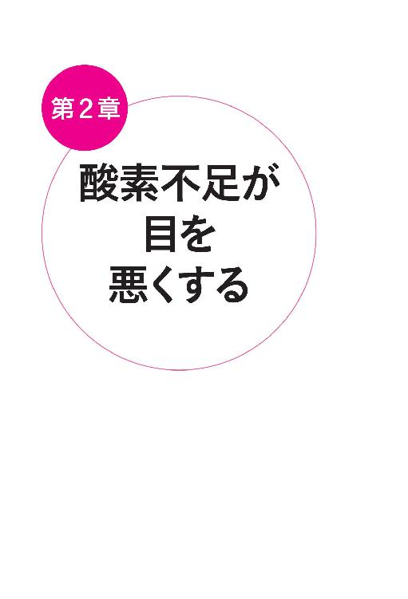
第２章 酸素不足が目を悪くする
目を悪くする一番の原因は酸素不足
目の最大の栄養源は「酸素」です。
また目だけに限らず、酸素は、私たちが生きていくために、欠かすことができないものです。
人間は食事をしなくても、水を飲んでいれば１カ月は生きることができると言われています。
ですが、息を止めてしまったら、たった１分でも活動することが難しくなりますし、１５分も呼吸できなければ、心肺機能がストップし死に至ることもあります。
「呼吸＝酸素」は生命活動の基本です。
私たちの体を形づくる６０兆個の細胞は、すべて酸素をエネルギー源としています。
まして、眼筋の運動は１日１０万回以上。
ですから「酸欠」状態になると、目は一番にその機能に大きな影響を受けてしまいます。
酸素欠乏が具体的にどういった視力障害につながるのでしょう。
まず、「酸欠」になると、毛様体の筋力と水晶体の弾力が失われることから、近視や老眼が加速します。
水晶体の新陳代謝が衰えて、濁りが生じると白内障になり、眼球内の老廃物がきちんと排泄できなくなると、飛蚊症を招きます。
そして酸素欠乏のために房水という、目の組織を満たす体液の排泄が滞ると、眼圧が上昇し緑内障の原因になります。
さらに視神経が栄養不足に陥ることも加わって、視野が損なわれると考えられるのです。
その「酸欠」の原因はもちろん、私たちが酸素を直接取り入れることができる、唯一の方法、呼吸にあります。
十分な酸素が取り込めない、大きな原因は２つあります。
まず、私がこれまで、約１０万人の患者さんを診てきて、最も大きい酸欠の原因は、胃腸の硬化です。
このことを伝えると、
「息を吸うのは肺でしょう？ なぜ胃腸が関係あるの？」
と、必ず問いかけられます。
ですが、胃腸が硬いとなぜ酸素が取り込めないか、試してみていただくと実感することができます。
お腹まで深く、息を吸い込んでみてください。
何回か深呼吸したら、胃の上に手をあててみてください。
手の重みが肺のふくらみを妨げ、思うように吸い込めませんね。
胃腸が硬化していると、お腹のなかに息を思いっきり吸い込めず、呼吸が浅くなってしまうのです。
また、胃腸が硬くなっているということは、消化活動や蠕動運動もスムーズに行われていないということです。
中医学では、栄養の供給源である胃腸は木の根っこに例えられ、最も大事な臓器とされています。そして胃腸がきちんと働いていないと、全身の血行が衰えるといわれています。
さらに胃腸の働きが鈍っていると、自律神経のバランスが乱れて血流障害を引き起こし、全身を酸素不足に陥れます。
次に多いのが、姿勢の悪さ。
事務仕事をしている方は、１００％酸欠だと思って間違いないでしょう。
パソコンに向き合っていると、どうしても前かがみになります。
うつむいたままだと気道がせまくなり、息を吸っているつもりでも、チョロチョロと細くしか入っていません。
そんな姿勢で８時間もいれば、１日の大半をちゃんと呼吸しないで過ごしていることになります。
加えて座りっぱなしでいるということは、自分の体重でおしりや太ももを圧迫して止血しているのと同じです。
血流がどんどん悪くなり、血液がドロドロになる。
その結果、目への栄養の供給が滞ってしまうのです。
血流が悪いとすべての病気がやってくる
私たちの体の働きの根本を支える、代謝や消化など、すべての機能が血流に頼っています。
そのため血流が悪く、細胞への酸素の供給が足りなくなると、全身のあらゆる部位で異常が発生します。
肩こりやダルさ、むくみや頭痛などといった、日常的に起こりがちなものから、糖尿病、高血圧、ひいてはガンなども、酸素不足が主な要因となることが多いのです。
多くの著名な医師や学者が、早くからそのことに気づき、指摘しています。
野口英世博士は、
「すべての病気の原因は、酸素の欠乏症である」
と言っています。
全身の健康にこれほど大きな影響を及ぼす酸素。
この酸素が足りなくなると、近視、老眼、緑内障、白内障、ドライアイなどの、視力障害の症状が現れるのも、しごく当然と言えるでしょう。
酸素を取り入れれば集中力が増す
現代社会の空気中の酸素濃度は、約２１％といわれています。
これが２０％まで落ちると、思考能力の低下や手足のしびれなどの変化が起こり始めます。
ほんのわずか１％ほど低下しても、影響が出るのです。
さらに１５％になると、ろうそくの炎が消えるほどの酸素不足になるので、人間であれば、息苦しくて力が入らないといった状態に陥ります。
酸素濃度は、閉め切った室内では約２０・６％に減少。
飛行機内や満員電車では、１８％近くの低い数字になります。
１８％までは、一応安全範囲の最下限とされていますが、個人差によって体調に異変を感じる人も多くいます。
空気の入れ替えができない部屋や、長時間のフライト、満員電車での通勤が疲れやすく、頭がぼーっとしてしまうのは、酸素不足が大きな原因なのです。
ですが、逆に言えば、しっかり酸素を取り入れれば、脳に血液が十分供給され、集中力がアップします。
私の提案するさまざまな生活習慣やエクササイズで、酸素を取り入れられるようになった患者さんの話です。
それまでは電車の中で本を読み始めると、必ず途中で寝てしまっていたそうです。
ところが、じょじょに長い時間読んでいても眠くなることがなくなり、ついにはまったく寝ずに本を読むことができるようになったのです。
実は電車の中で本を読んでいて眠くなるのは、目が酸素不足で疲れている証拠です。
脳が「これ以上読むのはやめなさい」と指令を出すから眠くなるのです。
この患者さんは、ほかになにも目が覚めるようなことを実践していないので、
「これは、目を改善したからに違いない！」
とうれしくなり、わざわざ電話をかけて報告してくれたのです。
きっかけは「網膜色素変性症」の人を治したこと
ここで、私が現在の治療法を確立した大きなターニングポイントである、患者さんのお話をしましょう。
この本の「はじめに」でも少しだけ触れたお話です。
この患者さんは、２０代後半の男性です。
低血糖症がひどく、心臓病、甲状腺機能低下症でした。
全身に力が入らず、思うように活動できない状態。心臓に負担がかかり、仕事はおろか、動くこともままなりません。
そしていつも朦朧としていました。箸も持つのもやっとという状態でした。
何軒も医者を回りましたが、全員から、
「動いたら死ぬ」
と見放され、薬ばかり、１日４０錠も飲むようにいわれていたのです。
そこで最後に、私のところに、お母さんと伯母さんと３人で相談に来られました。
その時は、本当に薬害で、生気を失い、やっとか細い呼吸をしていました。
さっそく、酸素を吸ってもらいながら、１４経絡療法で全身の施術を行いました。
今後の治療方針を示し、薬を減らす計画や、自宅での生活習慣の見直しについて話し合いました。
そして毎日５㎞歩き、２㎏の鉄アレイを５０回持ち上げ、腕立て・腹筋５０回を日課としました。食事は１日３度しっかり。甘い物、とくに飴やチョコレートや菓子類は原則禁止。
これらを８カ月続け、１４経絡療法と酸素療法で生気を取り戻し、薬は完全に止められました。
しかし、当初は気が付かなかったのですが、歩くとたまにドアやまわりのものにぶつかるので、
「どうして、メガネをかけているのにぶつかるの？」
と不思議に思い調べたところ、この患者さんは、「網膜色素変性症」を併発していました。かつてはいろいろな専門医に通院もしていたのですが、あきらめて行かなくなっていたのです。
「網膜色素変性症」とは、眼球の内側を覆っている網膜に褐色の色素がにじみ出て、視野狭窄が起こる病気です。
失明の可能性もあり、治療法が確立されていないため、原因不明の難病といわれています。
ちなみに、私のところで最初に施した前述の治療は、低血糖症の治療です。
患者さんが西洋医学での治療を希望したため、この目の病気にかんしては、分業として当院の治療から外し、知りうる限りの、最高に腕のいい眼科医を紹介しました。
ところが何人か専門医を紹介したのに、すべて見放され、ある眼科医では、まったく役にたたない高額なメガネをつくらされる始末でした。
まだ未来ある若者が、その都度がっかりし、打ちひしがれる、悲しそうな姿を見て、
「だったらオレが治してやろう！」
と、そのとき決意したのです。
しかし、「絶対に治してみせる」と意気込んではみたものの、それまで私は、目の治療は行っていませんでした。
体の治療に伴い、近視の視力をアップしたりしていた経験はありましたが、「網膜色素変性症」を治したことはありません。
どうしたらいいのか...。
昼も夜も考えていたある日、健康機器メーカーから、商品を見てくれという連絡がありました。
熱を発生させてトントンとマッサージをする、単純な熱針療法のその機械を見たとたん、
「あっ、これだ！」
とひらめきました。
中医学では、目の周囲は内臓を支配する自律神経が大きく関わっています。
そうだ、これでまず、自律神経を活性化させようと考えました。
熱針療法は、シンプルながら、自律神経の乱れを調整するのに効果が絶大なのです。
患者さんに来てもらい、全身の１４経絡療法で目に負担をかけている流れを改善し、血流障害を解消するために酸素を吸ってもらいながら、最後に目の周囲を熱針で〝トントン〟とタッピングしました。
自律神経が麻痺していると、摂氏４０度以上の熱針をあてたとき、痛点の反応が出ます。
この患者さんも痛がっていましたが、施術が終わった途端、
「あっ、時計！」
と叫びました。
５メートル離れた壁にある時計を、指さして興奮していました。
今まで全く見えていなかった、時計の存在が分かったのです。
そして治療を重ねていくうちに、ついに、針の動くのも見えるようになりました。
「どうして、こんなにかんたんな治療で少しでも回復できるのに、眼科治療は何をしていたのか？」
と思った私は、さらに、短期間で体を改善するため、母親の了解を得て一緒に中国に渡り、提携している中医学の治療院に行きました。
そして、中医師と打ち合わせし、治療をしてもらいました。
日本での治療法の確信を得たかったのです。
その結果。
５日間でなんと、欠けていた視野が復活。
視力も０・０１以下だったのが、０・５まで回復したのです。
中医師と私は、手を取り合って、興奮し、喜び合いました。
このことをきっかけに、私は自分の提案する治療法に確信を抱き、あらゆる目のトラブルにチャレンジし、「現状よりもよくしてみせる」と戦いを公言するようになったのです。
それと同時に、目の研究をして、アイトレーナー器を開発して特許を取得し、現在の治療院で視力回復のスピードアップをはかっています。
この患者さんによって、私は、本来の、真の治療家への道に導かれました。
また、自分が最初から目の治療をあきらめていたことを本当に恥ずかしく思いました。この方の治療がなければ、今の「今野式視力回復法」はなかったでしょう。
心から感謝しています。
この患者さんに施した治療は、現在の私の治療法の原点です。
目の最大のトラブルは、血流障害です。
酸素欠乏症の解消が、回復のカギとなります。
目だけではなく「脳」でも見ている
「ものを見る」のは、目だけの作業ではありません。
目で捉えた像は、網膜で電気信号に変換され、視神経を通って脳の大脳皮質にある視覚野へと伝えられます。
そしてそこで脳が映像化して、初めて「見えた」ということになるのです。
私が患者さんに、
「実は脳でも見ている」
と伝えると、ほとんど全員の方が驚かれます。
ですが、「脳」といわれてピンとこなくても、
・ボーッと歩いていたら、顔見知りに気づかなかった
・疲れているときに、字を読み間違えた
・そこにあるはずのものがなかなか見つからなかった
といった経験は誰でもあるはずです。
これは、目にはものは映っていても、脳が「見ていない」ため、気づかない状態です。
ですから、脳が「見える」と確信することが、視力回復に大きな力を及ぼします。
視力が悪い人のなかには、
「どうせ見えないから...」
と、ネガティブなイメージを脳に送り込むことで、さらに視力を悪化させている人が少なからずいます。
近年、ＯＬさんたちの間で、メガネやコンタクトレンズをしても視力が回復しない「弱視」の方が増えています。
「視力が落ちて、視覚障害者の手続きをしようかしら」「私は２級かしら」と、視覚障害の程度区分まで調べて深刻に悩む方もいます。
これは、
「視力はどんどん悪くなるもので、よくならない」
「パソコン仕事だから、目が悪くなるのは仕方ない」
などといった、あきらめの気持を脳に伝えているため、メガネやコンタクトで視力を矯正しようとしても、うまくいかなくなっているのです。
ストレスがかかると目が悪くなる理由
ストレスも目が悪くなる、大きな原因の一つです。
私たちが呼吸をしたり、心臓を動かしたりするような、自分の意志とは関係なく体の機能を調整する神経を、自律神経と呼びます。
自律神経には、交感神経と副交感神経があります。
交感神経は活動しているとき、緊張しているとき、ストレスがあるときなどに働き、反対に副交感神経は、休息しているとき、リラックスしているとき、眠っているときに働きます。
私たちの黒目のなかにある、黒い瞳の部分は目に入る光の量を調節しています。
これを瞳孔と呼びますが、瞳孔は、交感神経が優位な場合、まわりの虹彩が縮んで大きくなります。
実際に近視の人の目を観察すると、瞳が大きく、交感神経が優位にある体調の人がほとんどです。
こうして瞳が開いた状態が続くと、焦点の深さが浅くなり、ピント合わせに余分な力がかかります。
すると、調節を行う毛様体筋が疲弊し、視力の低下を招くのです。
交感神経を最も過度に緊張させる要因は、なんといってもストレスです。
そもそも私たちの体は、日中、活動するときは交感神経が優位に、夜から明け方にかけて休むときは、副交感神経が活発に働くようプログラムされています。
夜更かしや寝不足などをすると、自律神経のバランスが乱れ、体にストレスがかかります。
そのうえ、日常生活での精神的ストレスが加わると、常に交感神経が優位になり、毛様体筋も緊張し続け疲れてしまい、視力がどんどん落ちていくのです。
また、自律神経のバランスが乱れると、血流障害が引き起こされ、目を悪くする一番の原因である、酸素不足にも陥ります。
つまりストレスは、胃腸にすぐ影響します。「腹が立つ」という言葉がありますが、実際に胃が持ち上がり、胃腸の蠕動運動や働きが鈍くなり、硬化が始まります。これが全身への血流障害の引き金になるということです。
さらに見えないストレスから、自律神経がマヒしてしまい、視力が落ちるという、悪循環に陥るケースも少なくありません。
私たちは目だけでなく、脳でも、ものを見ています。
実は脳にとっては「見える」のが当たり前です。
１・５程度の視力があるのが、脳にとって安定できる、快適な状態です。
ですから「見えない」ということは、脳にとってかなり大きなストレスです。
そのストレスから、自律神経のバランスが乱れることもあるのです。
たとえ０・０１でも、視力をよくすることは、脳にとってもストレス解消につながります。
あなたの目と脳は、本当は、
「少しでもよくなりたい」
「治してくれ」
といっているのです。
自然治癒力を信頼しよう
人間の体は、２４時間、そして３６５日、１秒も休まずに、私たちにとってベストな状態を維持するために働いています。
酸素を全身に送り込み、食べ物から栄養を吸収し、毒素が入ってくれば、それを分解して排出します。
風邪をひけばウイルスと戦い、ケガをすれば、傷口をふさいでくれます。
また、健康な体の人でも、毎日５０００のガン細胞が生まれているといわれています。それでもガンにならないのは、自分の力でガン細胞をやっつけているからです。
この自己防衛機能である、免疫力を含む「私たちの体が常によくなろうとする働き」を総じて、自然治癒力といいます。
自然治癒力はいくつになっても、生きている限り私たちに備わっています。
ただ、誤った食生活やストレス、睡眠不足などの生活習慣の乱れが、自然治癒力の邪魔をし、その力を低下させてしまうのです。
私の提案する、視力回復を含む目の治療法は、この自然治癒力に全面の信頼をおいて行うものです。
体の働きを最大限に高め、よくなろうとする力をサポートする。
ですから、副作用がなく、体にまったく負担をかけないのです。
それどころか、実践していただけばいただくほど、ほかの部分も健康になり、「それまで悩んでいた別の症状が解消した」、「元気になった」などの声を数多くいただいています。
これまでは、「一度失われた視神経は回復しないから、残されたものを大事に使う」という諦めの言葉、治療法が主流でした。
しかし、かつて脳の障害された神経繊維は回復しない、と言っていた学説は、今や、「再生する」と変わっています。
視神経の障害についても、同様である可能性はないでしょうか。
現在、視神経の再生の研究も進んでいます。
人間の自然治癒力は、科学を超えるものがあります。
私たちの体は、環境を整えてあげさえすれば、ときに想像以上の力を発揮してくれます。
実際の治療で、視界の明るさや視力を少しですが取り戻し、フレンチ・ポップの女王であるシルヴィ・ヴァルタンの若いときの写真を携帯の待ち受けにして、気力も取り戻している７０歳近い患者さんもいます。
結論は、まだまだ出ていないのです。
ですから、たとえ今がどんな状況でも、あきらめないで欲しいのです
。
薬の飲み過ぎに注意する
ほかにも皆さんが考えてもみないことが原因で、目を悪くしていることがあります。
治療院にいらっしゃる患者さんは、目のトラブルと同時に、ほかの病気も併発している方が多く、たくさんの薬を飲んでいる場合がほとんどです。
私は治療の前に、どんな薬をどれだけ飲んでいるか、必ずたずねることにしています。なぜなら、薬を飲んでいることで、治療効果が上がらなくなることが多いからです。
たとえば自律神経を取り戻すための治療をしていても、自律神経や中枢神経を麻痺させる薬を飲んでいては効果が上がりません。また、薬害の起きるような強い薬、効果がないのに何年も飲み続けている薬のせいで肝臓や胃が弱っていることもあります。
目は、大量の酸素を必要としているのに、薬の解毒のために酸素を取られています。目の周囲の眼筋は、自律神経とも大きく関わっているのに、薬で乱され、視力回復が遅くなります。
私は「薬を飲む」ということに、無頓着な人が多いと感じています。
頭痛薬や胃腸薬を、医師の指示もないのに常用する。
また、「薬を飲んでください」と、先生にいわれたからと、どんな効用があるのかも確認せず、ひたすら数と時間を守って飲み続ける。
さらには、薬の副作用で具合が悪くなっても、やめない。
どんな病気でも同じですが、薬というのはあくまでも症状を抑えるためだけのものであり、薬を飲んでいるから病気が治っていくわけではないのです。
また、薬は一定期間飲み続けると、その効果自体が薄れます。
その理由として、一つは「薬剤耐性」といって、薬に体が慣れてしまい、飲んでいる状態がふつうになってしまうこと。
二つ目は、薬を常用することによって、細菌などが強くなってしまう場合。
抗生物質などを飲み続けると、同じ強さで叩かれているうちに、細菌のほうが強くなってしまうのです。
薬は、症状が悪化したときに「抑える」目的で飲むのは構いません。
ただし１週間経って、回復した、もしくは効果がなかったら、そこでいったんやめるべきなのです。
患者さんでも、一度角膜炎になり「またなる可能性があるから、点眼薬を続けなさい」といわれ、１年以上も問題ないのに目薬をさしていた方がおられました。
薬には、必要である免疫力まで抑えてしまう作用があったりします。
体の自然治癒力を高めるためには、薬はできるだけ減らし、常用するのはよく考えてからにしてください。
米国では病気と視力回復は別の医師が担当する
日本では目のトラブルがあると、どんな症状に限らず、頼るのは「眼科医」です。
しかしアメリカでは、「眼科医」と「視力眼科医」の２つに分かれています。
アメリカの「眼科医」は、目の病気だけを扱います。結膜炎などから始まり、緑内障、白内障、網膜剥離といったあらゆる病気の治療を行うのです。
一方で「視力眼科医」は、視力を維持、回復するためのケアを専門に行います。
専門が分かれていることで、それぞれの研究が進み、視力回復にかんしては「脳も見ている」ことをいち早く発見したりしています。
また、患者さんも、当たり前に「視力回復」に期待を持つことができるのです。
ご存知の方は多くないかと思いますが、実は日本にも「視能訓練士」という資格があります。
「視能訓練士」は国家資格であり、
「両眼視機能に障害のある者に対する、その両眼視機能の回復のための矯正訓練、及びこれに必要な検査を行なうことを業とする者」
と定められています。
いっけん、アメリカのように、視力回復を専門とする資格のように思えますが、「視能訓練士」には一つ条件があり、「医師の指示のもと」でしか働けないのです。
国家資格を持っていながら、現状では、検眼はドクターが行わなければなりません。
専門技術を持つ人間に、仕事を任せられない。
私は、これは非常にもったいないことだと思っています。
現在の医療体制では、視能訓練士として、目のトラブルを抱える人を助ける環境は必ずしも整っていません。
そのため私は、「目の美容学院」を運営し、中医学にもとづくアイソロジーを体系化し「アイトレーナー師」という資格を提供しています。
今、私の治療院は全国から患者さんが訪れ、予約も取りづらい日々が続いています。
また、地方の患者さんからは、「もっと通いやすい場所に、開院してほしい」との希望が相次いでいます。
一方で私にも、一人でも多くの患者さんを救い、目のトラブルから人生をあきらめないでほしいという願いがあります。
「目」から人々を健康にし、充実した人生を送ってもらいたい。
そんな考えに賛同いただける方でしたら、ぜひアイトレーナー師として、一緒に活躍してもらいたいと考えています。
眼科医が教えを乞いに来た
パソコンや携帯電話、スマートフォンなどの普及により、現代人は目を酷使しています。
特にインターネットの画面は、眺めているだけでも１秒間に１０億ビットもの情報を発しています。
私たちが１秒間に読み取れる文字数は、一般的に約４文字といわれていますから、その数百万倍もの情報が、目から脳に送られているのです。
そのほかにもメールやゲーム、巷にあふれる広告画面など、私たちのまわりには、見ようとしていなくても、勝手に目に入ってくる情報であふれています。
さらにモニターからの光は、照明などの間接的な光に比べると２～３倍、目と脳を疲れさせるといわれています。
こうした状況は、加速する一方です。
ということは、今後ますます、目と脳に負担をかける社会になっていくことは、疑いの余地がありません。
そんななかで、どうしたら患者さんの目をよくしてあげられるか。
西洋医学、中医学の垣根を越えて、私のもとには、
「治療法を教えてほしい」
「一緒に治療させてほしい」
と、何十人もの眼科医の方からの問い合わせがあります。
やる気があり、患者さんのためを考えている医師ほど、効果があがる方法を常に探していますから、連絡をしてこられるのでしょう。
私も、もちろん協力を惜しみません。
これからの社会で、否が応でも増えていく、目のトラブルを防ぎ、一人でも多くの人に、見える喜びを味わっていただきたいと考えています。
視力回復セミナーで、会場が騒然となった
私の提案する視力回復法は、『はつらつ元気』（芸文社）や、『ゆほびか』「壮快」（マキノ出版）など、さまざまな健康雑誌によく取り上げられます。
得体の知れない健康療法が数多く世に出回る昨今、理論や効果のしっかりしたものでないと、雑誌の特集で掲載されることはありません。
ところが私の視力回復法は、『ゆほびか』で１３ページを使って特集されました。
しかも３回特集を組んでもらい、合計で３９ページの紙面を飾ったのです。
２００９年に掲載された『ゆほびか』５月号の記事は、読者から大反響を巻き起こし、編集部から「視力回復タッピングセミナー」をやってほしいという依頼がありました。
『ゆほびか』誌上で、体験者を募集したところ、２７名の定員枠に、なんと３００名以上が申し込んできたとのこと。
あまりの反響の大きさに編集部は驚きました。
そして初の公開セミナー当日、抽選で選ばれた２７名の読者が集まり、まず全員の裸眼視力を測定しました。
次に講師として私が登場。
目と血液の関係、酸素を目に取り入れなければならないこと、お腹と目がつながっていること、目をよくする栄養バランスなどについてお話しました。
そして最後は、読者が待ちに待った、タッピング指導です。
参加者全員でつくった輪の中央に私が立ち、準備体操をしました。
それから全身のタッピングです。
顔のタッピングは、５本の指でとんとんと軽く、体に行うときは、握りこぶしでリズミカルに叩きます。
タッピングを始めると、あちこちで笑顔や歓声が沸き上がりました。
「思っていたより強めにタッピングするんですね」
「気持ちいいわ」
「楽しい」
などという声が聞こえます。
あっという間に予定の２時間が終了しました。
そのとき私は初めて編集部から、
「実は先生、今日は１回のセミナーだけで、どれだけ視力が回復するか試してみたかったのです」
と今日のセミナーの趣旨を伝えられ、あぜんとしてしまいました。
私が依頼されたセミナー内容は「視力向上タッピング」の指導。
実際に目がよくなるかどうかのデータをとることは聞いていなかったのです。
タッピング後の全員の視力測定が始まりました。
もちろん、測定するのは『ゆほびか』が用意した専門の方です、
１回でどのくらい向上するか不安もありましたが、結果はなんと、参加者２７名中、２４名の視力がアップしました。
つまり８８・８％の人の目がよくなったのです。
なかでも４７歳の女性は、右目が０・１５から０・３に、左目も０・２から０・４にアップ。
１１歳の男の子は、右目０・６、左目０・５だった視力がともに０・９になったのです。
たった１回のタッピングの成果で、ここまで目がよくなるとは。測定結果の発表があるたび会場はどよめき、受講生全員が騒然としました。
お互いに顔を見合わせ、ビックリしている様子でした。
それだけではありません。
講座終了後の感想をうかがうと、視力アップにとどまらず、幅広い効果の報告が次々とあがったのです。
「視野が明るく広くなった」
「目のまわりが温かく気持ちがいい」
「目が本当にスッキリした」など。
さらには飛蚊症の方が、
「いつもは虫が飛ぶような黒い点がいくつも見えるけど、ほとんど気にならなくなった」と言ってくださいました。
それだけではありません。
「ドライアイが軽減した」という人もいれば、
「室内の人やものが、濃く見えるようになった」という報告もありました。
視力のよくない人は、首や肩のこり、頭痛が伴うことが多いのですが、こうした症状にかんしても、多くの人たちから、
「痛みがとれた」、「軽くなった」という報告がどんどんと飛び出したのです。
受講生全員の顔が輝いていました。
そして皆さん、満面の笑顔で微笑んでいたのです。
セミナーは大成功でした。
私は最後の最後に、「マッサージやタッピングを継続すること」の重要性を強調して講座を終了しました。
このセミナーではタッピングをメインに紹介しましたが、私が提案する「目を健康にする」方法は、７種類あります。
ではいよいよ次の章で、その７つをすべてご紹介していきましょう
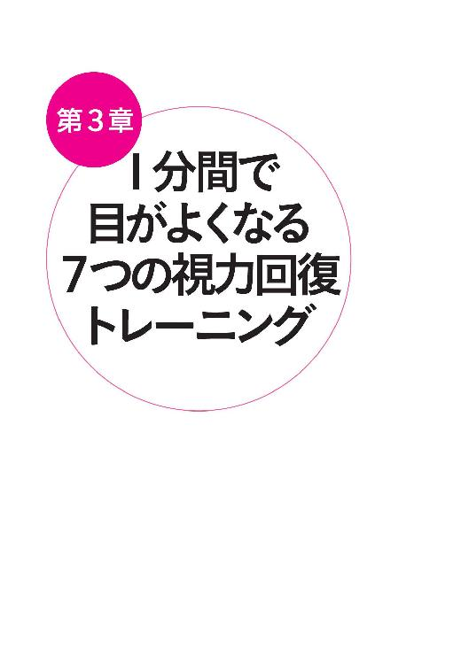
第３章 １分間で目がよくなる ７つの視力回復トレーニング
今野式７つの視力回復トレーニングのやり方
ここでご紹介する７つのトレーニングは、全部がとてもカンタン。
道具などはいりません。
必要なのは、あなたの体だけ。
順番も関係ありません。
また、一つひとつは１分もかからないので、仕事や家事の合間など、ちょっとしたスキマ時間に手軽に行うことができます。
１日に７つのトレーニング、すべてを行っていただくのが理想的です。
そうすれば、あらゆる角度から、目のまわり、そして全身の酸素不足を解消し、自律神経のバランスを整えて、脳が見える状態をつくり出します。
しかし、最初から意気込んで、無理をしても、途中で息切れしては元も子もありません。
目をよい状態に改善し、維持するためには、少しずつでも継続することが大切です。
ですから、
パソコンに向かっているのに疲れたら、ちょっとタッピング。
トイレに行ってついでに、鏡を見ながら指圧してみる。
お風呂でリラックスしながらシェイクする。
など、気づいたときにちょこっと行うことから始めてみてください。
「無理をしないように...」
と思っていても、気持ちいいので、どんどんやりたくなってしまうかもしれません。
そのときは、１回に行う回数だけを守っていただければ、１日に何度やっても構いません。
やればやるほど、効果がアップし、どんどん健康になっていくのが今野式だからです。
トレーニング① タッピング法（打圧法）
■目のタッピング
健康雑誌『ゆほびか』で行ったセミナーでは、その場で参加者の９割の視力がアップし、大反響を巻き起こしたのが、「タッピング」です。
私が治療院で、５０名の患者さんに対して行ったモニター調査では、１００％の方の視力が改善。
また、視力だけでなく、
「目の前にいたモヤモヤが減った！」
「斜視が改善した！」
など、その他の目にまつわる悩みの多くにも効果を上げています。
「タッピング」は、人差し指から小指までの４本の指先で、トントンと叩きます。
少し強めに叩きますが、皮膚が赤くなるまで叩かなくても十分効果はあがります。
１秒間に３回叩くくらいの早さで、リズミカルにタッピングしてみましょう。
１ 眉間からこめかみに向かい、眉毛の上に沿って５回タッピング。
２ 目の１センチ下を、目頭から目尻に向かい、５回タッピング。
３ こめかみから頭頂に向かって、５回タッピング。
タッピングは、筋肉、骨、皮膚を同時に刺激して血流を促進。また、血液の流れをよくすることで、酸素の供給量を増やします。
また、タッピングしている目の回りには、血流を促すと同時に、自律神経の活動を促すツボが集まっています。ツボの位置を一つひとつ意識しなくても、タッピングするだけで、自然と有効なツボを刺激できるのです。
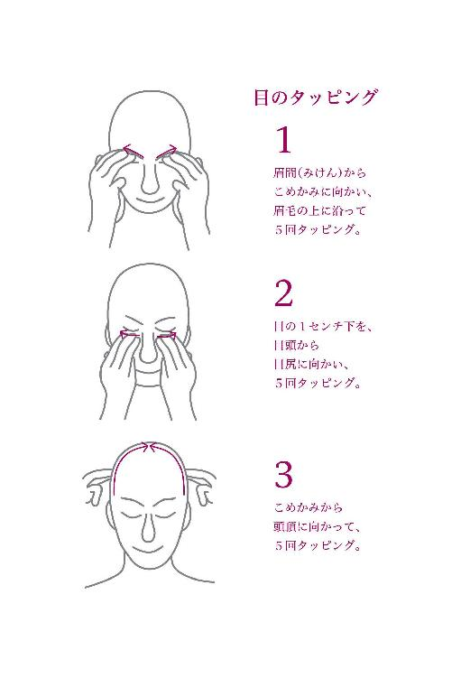
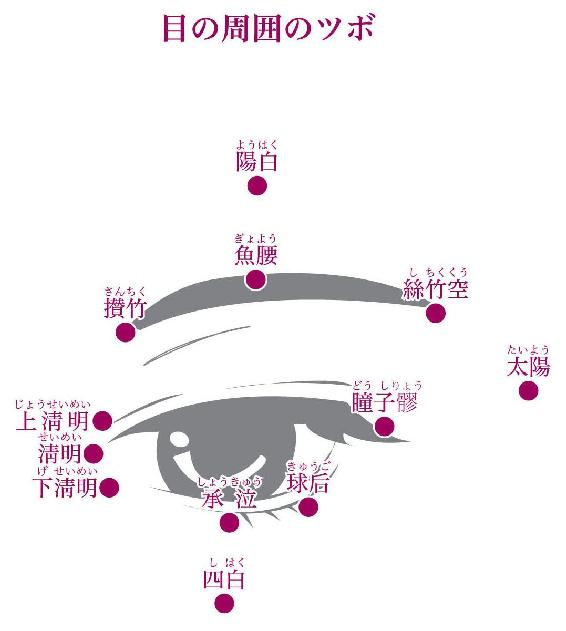
さらにこのツボは、中医学では内臓とつながるとされる経絡（生命エネルギーの通り道）上にあり、タッピングすることで内臓も活性化されます。
また、自律神経は全身にはりめぐらされていますから、目の周囲に加え、腕や足などの全身のタッピングも行い、刺激を与えるとさらに効果的です。
■腕のタッピング
手首からひじまでを、反対の手の側面で、チョップをするように往復１０回タッピング。腕の表と裏、両方行います。
■足のタッピング
くるぶしからひざまで、手の側面を使い、チョップをするように往復１０回タッピング。内側と外側、両方行います。
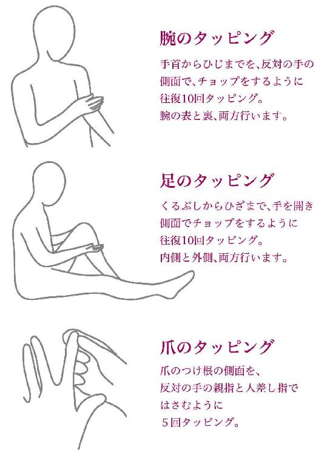
■爪のタッピング
手の指の爪のタッピングをします。爪のつけ根の側面を、反対の手の親指と人差し指ではさむように５回タッピング。
トレーニング② シェイク法
「シェイク」も両手の人差し指から小指の４本を使います。
指先を皮膚に軽く押しあて、左右や上下にブルブルと揺すります。
筋肉がほぐれるようなイメージで、また、上下の場合は「掻く」ようなイメージで行ってください。
１ 眉間側の眉上に両手の指を軽くのせ、
上下に掻くように５回シェイクしながら眉上を３カ所移動します。
２ 目の下にある骨に両手の指を軽くのせ、
左右に５回シェイクしながら３カ所移動します。
３ 目尻からこめかみに４本の指を軽く押しあて、左右に５回シェイクします。
４ 耳の上や頭部など移動して、両手で左右や上下にシェイクします。
５ 首（頸椎）の上に片方の手のひらを軽く押しあて、左右・上から下に５回シェイク。
６ 首の両側は、両手で軽くあて、上から下に・左右に５回シェイクします。
シェイク法は、皮膚と血管、そして筋肉を同時にもみほぐし、血流促進はもとより、内臓の活性化、そして脳も刺激します。
そしてブルブル震わせることで、その刺激が、それぞれ脳や内臓などに信号を送って本来の役割を果たさせ、タッピングなどで活発になった自律神経や血流システムを安定させます。
トレーニング③ さすり法
「さすり」は、中指から小指の３本の指の腹を使い、皮膚表面をじっくりとさすります。
■上側（眼窩〈眼球が収まっている頭蓋骨のくぼみ〉のふち、眉上、眉の上）
親指をあごの中心に置いて、支えにします。
１ 両手の中指の先の腹で、目頭側の上の眼窩を目尻側まで軽く５回さすります。
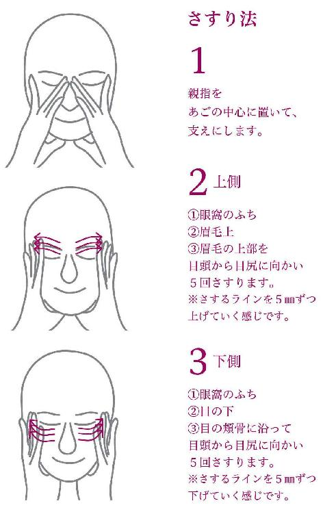
２ 眉を、眉間側から目尻側まで、中指の腹で軽く５回さすります。
３ 眉の上を、眉間側から目尻側まで、中指で軽く５回さすります。
■下側（眼窩のふち、目の下、目の頬骨）
親指をあごの中心に置いて、支えにします。
１ 両手の中指の先の腹で、目頭側の下の眼窩を目尻側まで軽く５回さすります。
２ 目の下を、目頭側から目尻側まで、中指の腹で軽く５回さすります。
３ 目の下の頬骨を、目頭側から目尻側まで、中指で軽く５回さすります。
４ 中指・薬指・小指の３本の指で、こめかみをやさしくプッシュして、３秒静止します。
さすり法のポイントは、皮膚の奥にある、こった筋肉をなでるイメージで行うことです。
じっくりとさすることで、皮膚に熱を発生させ、スムーズな血液循環が長続きします。
さらに、こめかみに３秒圧を加えることで、血液が流れる勢いを後押しします。
トレーニング④ 指圧法
「指圧法」は、目のまわりと耳にある、血行を促し、目の栄養である酸素を供給するツボを押して刺激します。
■目のツボ
目の周囲には、内臓と関わる経絡が通っており、視力回復に欠かせぬポイントになります。
１ 目の回りにある１２のツボ（前述ページを参照してください）に、中指の先で軽く触れ、３回まわします。
２ その後、やさしく３秒間プッシュ（押圧）し、静止します。
ツボの正確な場所が気になる方もいるかもしれませんが、大きな指先で回してツボ周辺を刺激していますので、図を参考にしてだいたいの見当をつけて指圧すれば、ツボにあたります。安心して行ってください。
■耳のツボ
次は目に効果的な耳のツボをご紹介します。
１ 耳のツボは、少し強めに、中指と親指でツボを挟むように３秒押圧します。
２ 耳たぶや耳全体を、親指と人差し指でもみほぐすようにマッサージします。
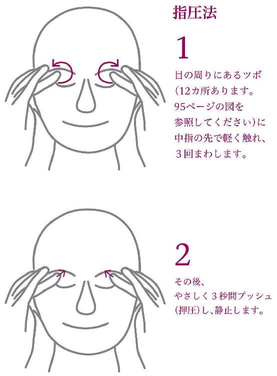
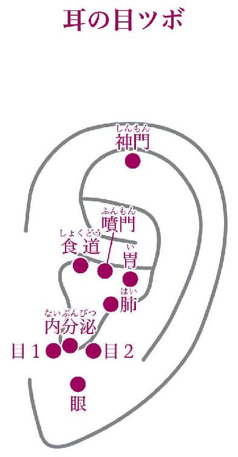
耳には多くの、体全体に影響するツボがあります。
マッサージによって、内臓の働きや自律神経の乱れも調整されます。
普段触らないところなので、さすったり、指圧したり、引っ張ったり、耳の穴に指を入れて前後に指圧などすると、目にも聴力にも良いですよ。
トレーニング⑤ 呼吸法
呼吸することは、あまりにも当たり前のことなので、
「できて当然」
と、皆さん考えています。
でも、私に言わせれば、アスリート以外は、ほぼ全員の方が、満足に呼吸をしていません。
呼吸は体に直接、酸素を取り入れられる、たった一つの方法です。
１日に何度でも、気づいたらこの「今野式」の呼吸を意識してみてください。
そうすることで、肺を大きく使って酸素をたっぷりと取り込める、深い呼吸ができるようになるはずです。
呼吸の基本は、鼻から吸って口から吐くこと。
口で吸うと、空気中のホコリや細菌をそのまま取り込んでしまうので、必ず鼻から吸い込みましょう。
そして深い呼吸をするときは、今、肺のなかにある空気を、先にすべて吐きだしてしまうことがポイントです。
「深呼吸」というと、最初に思いっきり吸い込もうとする人が多くいますが、順番が逆なのです。
いったん吐ききってしまえば、あとは自然に空気を吸い込みますので、まずはしっかりと出し切りましょう。
そしてそのあと、肺が背中や体の脇からもふくらむイメージを持って、思いっきり空気を吸い込みます。
吐きだすときに６秒以上かけるのが、深呼吸のポイントです。
なぜなら、筋肉の繊維を構成しているフィラメントの働きは５秒しか持続しません。５秒以上負荷をかけると、フィラメントは本数を増やして耐えようとするので、筋繊維が太くなり、効率的に鍛えられるというわけです。
呼吸筋が鍛えられれば、深くしっかりした呼吸ができるようになるので、酸素をたっぷり取り込むことができます。
また、深い呼吸を繰り返すと、副交感神経が活発になりますので、緊張続きの眼筋をゆるめる効果もあります。
呼吸がしっかりできることは、これまでにもご説明してきた通り、人間のもっとも大切なエネルギーの代謝がきちんとできることを意味します。
健康体でいるためには、酸素の取り入れがもっとも大切なのです。
正しい呼吸法が日常的にできるようになれば、体を巡る酸素の量が増え、タッピングやシェイク、ツボ押しなどの効果も飛躍的に高まります。
トレーニング⑥ 確認法
「確認法」は、カンタンにいうと、脳のトレーニングです。
脳に「見える！」と確信させるために行います。
私たちは、目だけでなく脳でものを見ています。
「どうせ見えないだろう」
とあきらめていると、脳は見ようとしなくなります。
いつもメガネやコンタクトをつけていると、脳は、
「メガネをかけたり、コンタクトをつけたりするまで見ない」
と怠けるのです。
それを、最初は見える位置から始めて、脳に「見える」と思わせ、少しずつ距離を伸ばしていくことで、最終的に遠くのものが見えるようにします。
「確認法」は、
「メガネやコンタクトをしていなくても見えるんだよ」
と脳に教えるため、裸眼で行います。
１ まず、カレンダーの数字でもポスターの文字でもいいので、目 標物を決めます。
２ そして、裸眼で目標がしっかり見える位置に立ちましょう。
３ 数字や文字を確認したら、３～５センチ後ろに下がります。
ちょっと見えにくくなるくらいの距離がちょうどいいでしょう。
すると脳は、
「今見えていたものが見えないのはおかしい」
と微調整を始め、見えるようにし始めます。
３センチで見えなくなってしまうなら、１センチでもいいのです。
しっかり見える位置よりも下がる。そして見えるはずだと脳に思わせ、働かせるのがポイントです。
４ 毎日少しずつ、１～５センチ程度、後ろに下がり距離を伸ばしましょう。
「確認法」を行うと、脳の見ようとする力が高まり、脳が活性化します。
そして、少し見えることで、脳のストレスが取れ、癒されてきます。
集中力が増し、意欲も出てきます。
脳の働きがスムーズであれば神経伝達物質が多く分泌されます。働きが悪ければその分泌が少なくなり、自律神経の変調で体調も崩れていきます。
脳を鍛えることは、血流増進にもなります。仕事で莫大な情報量を的確に処理することも、可能にしてくれます。
トレーニング⑦ 瞑想法（脳の癒し）
パソコン、携帯、そしてスマートフォンなどからあふれている情報を一方的に受け取って、脳は疲労困憊しています。
そんな脳の緊張を解き、疲れをとって、「見よう」という気にさせ、「見える」と思わせるのが「瞑想法」です。
「瞑想」というと、何やら難しく感じるかもしれません。
ですが、脳を休ませるための瞑想ですから、目を閉じて幸せなシーン、楽しいシーンを思い浮かべるだけでいいのです。
「旅行にいった伊豆の海はキレイだったな」
「ヒマラヤの山に登ったら、どんなに清々しい気持になるだろう」
など、見たことがある景色でも想像上のものでも構いません。
きれいな風景や、子どものころの楽しい思い出など、ハッピーな気分に浸れる情景だったら何でもよいのです。
時間の制限もありません。
１分でも構いませんし、時間があれば５分でもいいでしょう。
ゆったりとした気持ちで、イメージの世界で漂ってみてください。
それだけで、瞑想をしたあと検査をすると、視力は上がります。
もちろん一時的な状態ですが、何度も繰り返すことにより、かなりのレベルまで見えるようになるのです。
楽しいことを思い浮かべるのが、ムリなくできるようになったら、一歩すすんで、
子どもの頃に見えていた風景や情景を思い出してみましょう。
目がよかったころ、メガネやコンタクトをしなくても見えていた風景を思い浮かべます。
すると脳のなかに眠っていた、「見える」という記憶がよみがえり、実際にどんどん見えるように導いてくれるようになるのです。
瞑想法は、１日何度やっても構いません。
パソコン作業の合間などに、
「ちょっと疲れた」
と思ったら、目を閉じて瞑想してみてください。
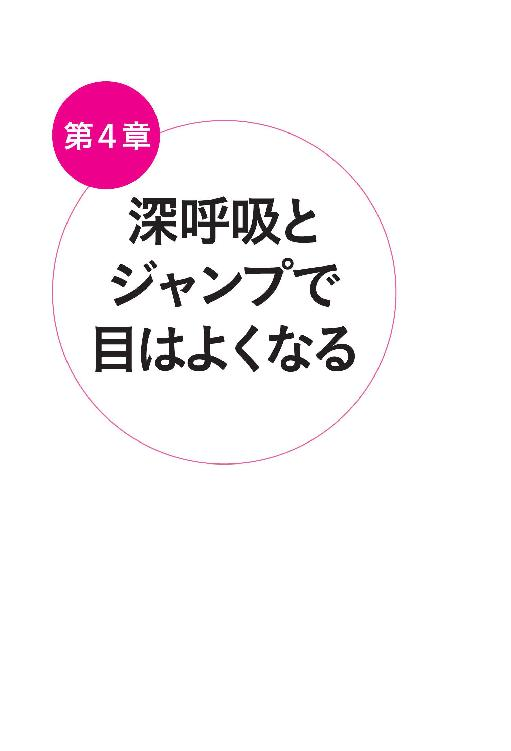
第４章 深呼吸とジャンプで目はよくなる
副作用ナシで目がよくなるのが「今野式」
この章では、日常生活に取り入れることで「７つの視力回復トレーニング」の効果をグンとアップし、体全体から目の健康を維持できる、生活習慣やエクササイズをご紹介します。
私の提案する「７つの視力回復トレーニング」やエクササイズは、自然治癒力を最大限に高めるよう工夫されています。
そのため、やればやるほど目はよくなるし、元気になる。
目の悩みで治療院を訪れたのに、いつの間にかほかの気になる症状も消えていたという患者さんが、あとを絶たないのはそのためです。
目は全身から診て、全身から施術します。
目を治すことは、体全身を治すことと同じなのです。
当院を訪れた患者さんでは、肩こり、頭痛、食欲不振、不眠症、肥満、肌の艶、目力、うつ病、腰痛、下痢、生理不順、難聴、めまい、耳鳴り、アトピー性皮膚炎、花粉症、睡眠時無呼吸症候群、血圧、糖尿病、心臓病などにおいて改善がみられています。
自分で決めた回数を行うのもいいですし、できるときにたくさんやってみるのも構いません。
多く行ったからといって、副作用や反作用はゼロです。
朝昼晩、起きている間は目を使っているのですから、疲れを感じたときや気分転換に、気軽に取り入れてみてください。
ただし、何度もいいますが、続けることが最大のポイントです。
朝起きたら顔を洗って歯を磨く。寝る前には風呂に入る、などと同じように、普段の生活に自然と組み込むことができたら最高です。
私は、毎日、空き時間に、目の周辺のタッピングやさすり法やシェイク法、指圧法をしています。電車に乗ってからでもエクササイズをしています。
深呼吸とジャンプで目はよくなる
特に続けてほしいのが、深呼吸とジャンプです。
深呼吸は、「７つの視力回復トレーニング」でご紹介した「呼吸法」でもいいですし、この章でお教えする「ペットボトル呼吸法」でも構いません。
私たちが１分間、無意識にする呼吸は、平均で１５～１８回といわれています。眠っているときは４分の３～３分の２に減るので、１日で２万～２万５０００回呼吸を行っている計算になります。
この約２万回のうち、５０回でも深い呼吸をすれば、目に見えて体調が改善します。
それほど現代人の呼吸は浅くなっているのです。
また、「ジャンプ」もぜひ、続けてみてほしい習慣です。
内臓を外側から刺激し、太ももや心肺機能を鍛える運動効果が高い運動は、ジャンプ以外にありません。
また、ジャンプなら場所を選ばず、いつでも手軽に行うことができます。
私の場合、やらないと調子が悪くなるのをすぐ感じるので、たとえば目の前で電車を１本逃しても、
「ラッキー。これで３分間深呼吸できる。ジャンプできる」
と考えます。
また、患者さんの治療時間の合間や、打ち合わせをしていてトイレに行くときなど、こっそりジャンプしたりもします。
「トレーニングしなきゃ」
「エクササイズしなきゃ」
と〝やらなければならない〟と感じると負担になりますので、こうした、少しのスキマ時間をみつけて、楽しみながら実践してみてください。
呼吸とジャンプ以外の生活習慣では、やはり食事を見直してもらうと、目だけでなく体が大きく変わります。
他にはお腹のマッサージやよい姿勢を維持すること、そして眼筋のトレーニングなどがありますが、できるところから始めてみてください。
目は肝臓が支配している
この本でご紹介する「今野式」目の回復法は、「中医学」をもとに組み立てられています（もちろん、西洋医学のエッセンスも入っています。健康に西洋も東洋もありません）。
「中医学」とは、「中国伝統医学」の略称でもありますが、同時に「中庸の医学」、つまり、バランスや調和を大切にする医学、という意味も持っています。
ですから、中医学では「目が悪い」ときも、目だけを手当てするのではなく、全身のバランスを見て、体を整えようとするのです。
中医学では、肝臓の状態が目に大きな影響を与えると考えられています。
肝臓は、血液を浄化し、栄養を与える臓器。
肝臓の働きが悪くなると、血管が集中している目も当然、衰えてきます。
症状が現れている場所だけをどうにかしようとしても、根本的な原因をなくさない限り、悪化、再発の可能性は常につきまといます。
人間の体は、それぞれのパーツが独立して動いているわけではありません。
全身を流れる血液や、体中にはりめぐらされた神経、そして筋肉など、さまざまな機能や臓器が関連しあい、働いています。
ですから本章では、いっけん、
「目に何の関係があるの？」
と思われるような、内臓マッサージや呼吸法、そしてジャンプなどをご紹介するのです。
レーシック手術で屈折率だけ変えても、体の内側から状態をよくしなければ、もとに戻ってしまいます。
大切な目を、一生よい状態に保つためには、目だけでない、体のほかの部分のケアも大事だということを知っておいてください。
ゼロ円で呼吸力を鍛える、ペットボトル法
「７つの視力回復トレーニング」の一つ、深呼吸は、体に酸素を取り入れるための基本中の基本と申し上げました。
ここでは、横隔膜などの呼吸筋を鍛え、さらにしっかりと酸素を取り込める体づくりができる、お金のかからない、とっておきのエクササイズをご紹介します。
用意していただくのは、市販の５００ミリサイズのペットボトル１つだけ。
ペットボトルの形は、四角くても丸くてもどちらでも構いません。
このペットボトルの底に、千枚通しなどで、直径１・５～２ミリの穴を３カ所開けてください。
準備はこれで完了です。
ボトルの飲み口をくわえたら、鼻から深く息を吸い込み、６秒以上かけて口から息を吐ききります。
底に開けた、小さな穴から空気が出て行くとき起こる、適度な抵抗が心肺機能を鍛えます。
理想は１日５０回ですが、最初から５０回できる人はほとんどいません。
１０回からスタートし、少しずつ回数を増やしていきましょう。
５０回を問題なくできるようになったら、次は、底にある穴を一つ指で塞ぎ、二つの穴から空気が出るようにします。
さらに二つの穴に慣れてきたら、１０秒以上の時間をかけて、息を吐ききるようにしてみてください。
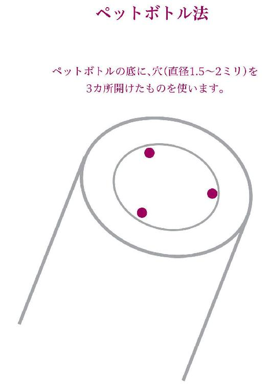
ジャンプで目がよくなる
胃腸がこわばったり、または、蠕動運動がきちんと行われていないと、自律神経のバランスが崩れます。そして乱れた自律神経は、血流障害を引き起こし、目と全身を酸素不足に陥れます。
「酸欠」の一番大きな原因は、胃腸の硬化だとお話ししました。
また、眼筋や毛様体筋など、目の機能を維持する筋肉は、自律神経と深くかかわっています。
ですから胃腸をほぐして機能を高め、自律神経のバランスを整えることは、目と全身の健康を維持するために、重要な役割を果たします。
そのために最も効果的な運動が、ジャンプです。
ジャンプをすると胃腸を揺らしますから、ぜん動運動を促し、硬化した胃腸をほぐします。
また、足の骨に刺激を与え、自律神経を活性化させます。
ジャンプ５００回は、ラグビーでの１試合に相当するほどの運動量ですから、当然血流も促されます。
さらにジャンプをすると太ももが鍛えられます。
太ももは心臓をしなやかにするセンサーの働きを担っており、太ももを鍛えることで心肺機能が向上。つまり、酸素をうまく体内に取り入れることができるようになるのです。
高くジャンプする必要はありません。
床から足が数センチ浮く程度でいいのです。
ジャンプなら、ジムにいかなくても、わざわざ運動する時間を見つけなくても、お昼休みのちょっとした時間でも行うことができます。
目標は１日５００回。
５０回ずつ１０回や、１００回ずつ５回など、体調にあわせ、ジャンプしてください。
ただし、ジャンプをすると少なからずひざに負担がかかります。ひざが悪い方の場合、もも上げやスクワットでも構いません。
もも上げやスクワットなら、１００回を目標に行いましょう。
自律神経の働きを高めるには、内臓に汗をかく
人間も「動物」、つまり動くものの一種です。
ですから、もともと体を動かすことで機能が保たれるようにつくられています。
動いて、血液や食べ物を循環させる。そのシステムには、自律神経が大きくかかわっています。
ところが、自律神経とはそもそも「無意識」のうちに体の働きを維持する神経ですから、「意識」してバランスを整えるのが難しいもの。
そして、外側から刺激して活性化する、数少ない方法の一つが「内臓に汗をかく」ことなのです。
ジャンプして内臓を動かすことは、もっとも効率的にこれを行える方法です。
「内臓に汗をかく」とはどういうことでしょうか。
じゃがいもを煮る場合、５分や１０分ではやわらかくなりません。２０～３０分するとやわらかくとけてきます。この「とける」まで行うことが大切です。
これがストレッチやウォーキングですと、内臓は思ったより動きません。ジャンプに比べると、効果がまったく違ってきます。
「毎日ウォーキングしています」
「ストレッチしています」
という人の動きを調べると、内臓を始めとして、使われていない部位がたくさんあります。
前に動くだけだと、惰性で進むことができるので、足のわずかな筋肉しか使っていないことが往々にしてあります。
上下の動きが入らないと、内臓に汗はかけないのです。
ジャンプは、負荷が少なく、短時間で効果が期待できます。
ジョギングもいいのですが、ジムでベルトの上を走るような、まっすぐの道を走るより、坂道などがある場所を選んでください。
アップダウンがある山道を歩くハイキングは、自分の体を持ち上げ、内臓を活性化するのにピッタリのレジャーです。
自然の景色のなかにいることで、普段酷使している目を休ませることもできるので、ぜひ、取り入れてもらいたいと思います。
また、ダンスなども良いですね。ヒップホップやブレイクダンス、ジャズダンスなど。
姿勢をよくして目をよくする
胃腸の硬化の次に「酸欠」になる原因は、姿勢の悪さです。
正しい姿勢で気道が開いていれば、私たちは１回の呼吸で４５０～５００ｃｃの空気を吸い込むことができます。
ところが、うつむいてパソコンなどに向かったりする「悪い姿勢」でいると、わずか１００ｃｃしか吸い込むことができません。
まったく呼吸ができなくなれば、自分で、
「まずい状況だ」
と、気づくことができますが、量が少ないけれども吸ってはいるので、息苦しくなったりはしません。ただし少ない酸素のしわ寄せが、体中で起きてしまうのです。
必要な量の５分の１しか吸い込めていない状態が、１日８時間以上、何週間も何カ月も続くと、脳は心臓や肺など、生命活動に関わる部分に酸素を優先し、ほかの部分の酸素を減らします。
その影響をまともに受けてしまうのが、実は血管が多く集まる「目」なのです。
また、背中を丸めて座っていると、自分の横隔膜で内臓を圧迫します。
これは、自分で自分のお腹に座っているようなもの。
内臓の働きを衰えさせ、血液循環を妨げます。
ところが、内臓の働きが衰えると必然的に自律神経がマヒしますから、苦しいと感じなくなってしまうのです。
小学生でも、姿勢の悪い子どもたちがいます。
ゲームなどの影響もありますが、
「自分だけ背が高くて、目立つのが恥ずかしい」
といった理由も多く、ねこ背になり酸素が吸えなくなって、視力障害を起こしています。
そんなとき私は、
「モデルになったつもりで、堂々と歩きなさい」
と教えます。
姿勢がよくなれば、目の状態が好転するだけでなく、体や脳の発達にも好影響を与えるからです。
硬くなった胃腸をほぐして目をよくする
硬くなった胃腸を、外側から刺激できる、もう一つの方法が「お腹もみ」。
マッサージすることでこわばった胃腸をほぐし、内臓全体の機能をアップ。全身の血流を促して、酸素を行き渡らせます。
胃腸が硬化して深い呼吸ができなくなると、寝ている間に呼吸が止まる「睡眠時無呼吸症候群」になる可能性が高まります。
実は、お腹を触って硬い人で、
「腹筋があるから、お腹が硬い」
とカン違いしている人が、思いのほか、たくさんいます。
そして、そうした方たちは「睡眠時無呼吸症候群」であることが多いのです。
また、「お腹もみ」をやってみて、痛みを感じる場所がある人は、内臓がかなり疲れています。
気づいたときにマッサージを行い、胃腸をほぐしてあげましょう。
息を吐きながら、おへそを中心とした半径１０センチくらいの位置を、
時計回りに、両手の指先を使って、押していきます。
スタート地点は、上から見たおへその右横。
１カ所で３秒ずつ、１回に３周行ってください。
この「お腹もみ」も、１日何回やっても構いません。
ただし食後など、胃腸が活発に働いているときは避けてください。
食前や、寝る前に行うのが良いです。
寝る前や朝起きたとき、ベッドのなかで「お腹もみ」をしたら、
ついでに両膝をお腹に引き寄せて抱え、
３０秒間その姿勢のままじっとしてみてください。
このポーズは下がった内臓を持ち上げ、機能を取り戻す効果があります。
眼筋を鍛える「目の腕立て伏せ」
目を支える眼筋は、１日１０万回以上動いています。
１日１万歩歩くのもなかなか難しいのに、１０倍歩くことを考えてみてください。
慣れていないと、足の筋肉が疲れ果てて、パンパンになるでしょう。
働いてこわばった眼筋をほぐし、１０万回の運動にもへこたれない筋肉をつくる、「目の腕立て伏せ」をご紹介しましょう。
「目の腕立て伏せ」をするのに、一番効果的なのがお風呂に入っているときです。
１ お湯にたっぷり浸したタオルを、縦に４つに折ります。
２ タオルを目の上にのせ、目をつぶったまま、６秒間上を見つづ けます。
温かいタオルで血行が促されると同時に、お湯を含んだタオルは筋トレの「ダンベル」の役目を果たします。目を支えている6本の眼筋が鍛えられています。
３ 次に右を見て６秒。下を見て６秒。そして最後に左を６秒間見ます。
これを５回繰り返してください。
その場でパッと視界が明るくなった。
目がしっかり開いて「目ヂカラ」が強くなった。
などの効果のほか、２週間継続して行ってもらえれば、確実に目が疲れにくく、状態が良くなっていることを実感できるはずです。
このエクササイズは、「ダンベル」の役割をするタオルがあるとより効果的ですが、タオルがなくても大丈夫です。
「パソコン作業で目がショボショボしてきた」
「映画を見たあとに目がチカチカする」
なんていうときにも、行ってみてください。
目の奥から血行が促され、疲れがスッキリ取れるはずです。
眼筋は、一生目を支える、大切な筋肉です。
目の良い人でも、ぜひ、普段から行ってください。
コンタクトは必要なときだけにする
コンタクトレンズを日常的に使っている人も多いでしょう。
でも、コンタクトレンズは、できればどうしても必要なとき、たとえば人と会う、人前に出るなどに限って使うようにしてほしいのです。
目は血流という「栄養」からだけでなく、呼吸もして酸素を取り入れています。
その呼吸を妨げるのがコンタクトレンズなのです。
いくら「酸素透過性」が高いものが開発されても、自然にはかないません。
コンタクトは、しないに越したことはありません。朝から晩までコンタクトを入れっぱなしは、避けたほうが目の健康にはよいのです。
そうした観点からいうと、女子高生の間で流行っているカラーコンタクト。
目にとってあれほどよくないものはありません。
ほとんどの場合、視力を矯正する効果がなく、単なるファッションでつけているのでしょう。
自分で自分の目を痛めつけているようなものですから、早く流行が終わってほしいと願っています。
また、メガネを大切にして、５年も１０年も使い続けるのも考えもの。
自分の目の状態にあったものをかけるためには、最長でも２年経ったら取り替えましょう。
特にこうした視力回復法を積極的に行うのであれば、数カ月ごとにこまめに検診して、変化した視力にあわせたメガネをつくってください。
視力が変化していることが数字でわかれば、より励みにもなるはずです。
汝の「ニンジン」を愛せよ
働き盛りの年代ほど、忙しいことを理由に、食生活に気を使っていないと感じています。
特にひどいのが独身男性。朝食は抜き、昼はファーストフード、夜はビールだけなんていう人が少なからずいます。
あなたの体は食べたものでつくられています。
いくら「７つの視力回復トレーニング」をして、眼筋を鍛えるエクササイズをしても、食生活が整っていなければ効果は半減します。
人間の体は、栄養が足りないと肝臓が自分の体を溶かし、自分を食べます。
「加齢」というのは、年齢を重ねたからなってしまう、しかたのない状態ではなく、臓器から栄養をとって「自分を食べた」結果、起こる体の衰えなのです。
「きちんと栄養をとりましょう」
といっても、なにも難しく考えることはありません。
３大栄養素である、炭水化物、脂肪、タンパク質を食事に取り入れ、野菜と果物を適宜、食べればいいのです。
「○○は体にいい」と聞くと、すぐに飛びつき、そればかり食べる人がいますが、食事で大切なのはバランスです。一つの種類に偏ることなく、肉、魚、ご飯、パン、良質のオイル、そして野菜や果物を、まんべんなく摂取するようにしてください。
朝ご飯に、具を入れたみそ汁を食べるだけでも、いいのです。
果物を食べる習慣がない人は、おやつにみかんやリンゴなどのフルーツを食べるなど、できるところから改善していきましょう。
目にいい食べ物の代表的なものは、なんといってもニンジンです。
βカロチンを含むニンジンは、油と相性がいいので、ごま油で炒めるだけのものを、私はよくつくります。漢方でも栄養補助の目的で、ニンジンはよく使われています。
生命活動における生化学反応すべてにかかわる、酵素が取れる、生野菜もオススメです。
緑、赤、黄色など、カラフルな色を選べば、酵素以外にも、ビタミンやファイトケミカルなど、さまざまな栄養を摂取することができます。
ぐっすり眠って目がよくなる
起きている時間が長くなればなるほど、それだけ目に負担がかかります。
また、目を開けていれば必ず脳が働きます。
よく見えない状態で起き続けていると、脳にストレスがかかり、自律神経のバランスが乱れます。
また、人間の本来の生活スタイルは、日のあるうちに活動し、暗くなったら休むというもの。これが現代では、人工の照明の出現で、すっかり崩れています。
夜更かしして活動すると、暗くなったら活発になるはずの副交感神経より、交感神経が働き、自律神経が乱れます。
自律神経のバランスが崩れると目に良くないのは、何度もお話しした通りです。
まずは自分にあった、適切な長さの睡眠をしっかりとること。
そして、遅くまで起きていないで、できるだけ早めにベッドに入ることです。
早めに眠ることは、成長ホルモンの分泌を促すことにもつながります。
大人になっても体を修復し、機能を高めるために欠かせないのが成長ホルモンです。
成長ホルモンは、就寝直後から始まる、深い睡眠のときのみ分泌されます。ただし、夜中の３時以降は、どれだけ深い眠りについても分泌されなくなってしまうのです。
理想の睡眠時間は、夜１０～１１時には寝て、朝５～６時に起きるという生活です。
仕事や家事などで忙しく、なかなかこの時間に眠れないという方でも、できるだけ、１２時前には寝るように心がけてください。
生活習慣の見直し方
最後に、生活習慣は、常に見直す工夫が大切です。
休日にでも、自分の生活スタイルを紙などに書き出して、１日や１週間の生活での食事の栄養バランス、量、回数や運動の量、回数、睡眠時間、目の酷使度やストレス度などをチェックするとよいでしょう。
体調も詳しく、
階段が疲れる、呼吸が浅い、大小便、目の疲れ具合、肩こり、頭痛、寝起きが悪い、咳が出る、鼻がつまる、耳の聞こえが悪い、テレビの音量がいつもより高い、歯ぐきが腫れる、物がつかえる、ふくらはぎが痛い、冷えを感じる、など、思いつく症状を書いて表をつくり、カンタンにチェックしてみましょう。
予防が最大の健康維持になります。
「自分の体は自分で守る」をテーマにしましょう。
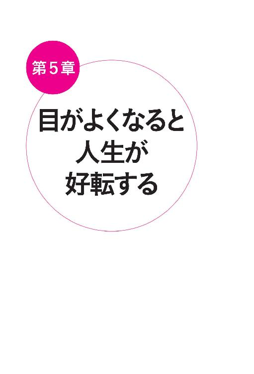
第５章 目が良くなると人生が好転する
視力がよくなると脳が発達する
私たちが「ものを見る」のは、目と脳の共同作業です。
目で見た情報が視神経を通じて大脳に送られ、そこで映像化されて「見えた」ことになります。
視力が低下すると、ものがハッキリと見えないため、視覚を通じて脳に伝わる刺激の量が減ることになります。
色、形、大きさ、形状、状態、位置、遠近など、視覚で得られる情報はたくさんあります。
脳は、こうした情報を「もの」と関連させることで、認識力や理解力を深めているのです。
視力がいい。すなわち、取り入れる情報が、クリアでハッキリしたものであれば、脳に刺激が伝わり、脳が発達します。
子どもの場合はその傾向が顕著です。とくに成長期、３歳から１０歳までの視力は大切です。脳も１０歳で大人と同等になります。
視力は目の機能で決まるのではなく、目から脳までの総合的なプロセスと考えていたアメリカでは、１９９０年代から、視力のトラブルで不振だった子どもたちの成績が、グングンアップし始めたといいます。
また、子どもが視力障害に陥ると脳の発達が阻害されるという研究結果も多く出されています。
見た刺激で脳が成長するので、少しでも早く改善しなさいと学会で発表されたため、高学歴社会である韓国などでは、とにかく子どもの目をよくしようと、世界中の医者を捜し歩いています。そうした多くの教育熱心なご家族が、私をたずねてよく日本にもいらっしゃいます。
また大人の場合も、視力が改善されて脳への刺激が高まれば、子どもほどではなくても、いくつになっても脳は発達します。
目がよく見える人に、ボケる人はいないといわれています。
また大人の視力回復は、やる気が出て、いろいろな興味が出てきたとか、集中力が出て、資格試験に受かったとか、記憶力が増したなど、脳が活動的な行動をとるようになるケースが見られます。
目がよくなると運動能力が高まる
私たちは「目がよい」、「目が悪い」というとき、視力測定表で測った「１・０」とか「０・８」などのデータをもとにして考えがちです。
ですが、ものを見るということは「目から入った情報を脳が見て、行動に移す」というプロセスすべてです。
運動に必要な視力は、どれだけ遠くまで見えるかの「静止視力」だけでなく、ほかにも「動体視力」、「深視力」など、さまざまな要素がかかわっています。
当院には、テニスやサッカー、弓道や野球の試合前や、乗馬の稽古前などに、集中力がつくので、とスポーツマンが来院しています。
視力は、スポーツでも大事なカギになります。「脳で見ている」のですから、とっさの判断力や集中力、気合いが増してきます。
パイロット試験にチャレンジした患者さん
私の治療院には、警察官やフライトアテンダント、パイロットなど、視力の良し悪しが合格にかかわる職業を目指す人が多く訪れます。
なかでも印象に残っているのは、パイロットを目指していた方です。
初めて治療院に来たのはパイロット試験の半年前。
中学生のときからの夢だったパイロットに、「視力」のせいでチャレンジもできないなんてあきらめきれないと、いろいろな治療院を調べたあげく、たずねてきたのです。
結局、視力はクリアーできたものの、試験には面接で落ちてしまい、不合格になってしまいました。
しかし、がんばった彼は、今は、ＩＴ関連の上場企業の仕事でがんばっています。
「やるべきことはすべてやったから悔いはない」と、すっきりした笑顔を浮かべる彼を見ると、チャレンジ精神が、今後の仕事にきっと生きると思います。
どんな人でも、目が悪いというだけで、人生をあきらめてほしくないと、つくづく思います。
目をよくしてエステいらず
「今野式」を実践すると、女性は特に、
「キレイになった」
といわれることが多いようです。
まず、目に十分な栄養が届き、各器官が機能し始めると、目がパッチリと開き「目ヂカラ」が強くなります。
そして、目のまわりの血行がよくなるため、小じわがやわらぎ、くまやむくみも軽減します。
全身に酸素が行き渡るため、肌がなめらかになり、化粧のノリがよくなります。
私は男性ですが、
「年齢のわりに、肌がツヤツヤ」
とよくいわれます。
治療院に通い始めて数カ月したら、娘さんに
「最近肌の調子いいけど、どこのエステ通っているの？」
と聞かれたという方がいらっしゃいました。
また、ペットボトル呼吸法を欠かさず行っていたら、体重が減ったという女性もおられます。
気道が強くなると腸も鍛えられるので、代謝がきちんと行われるようになり、便秘が治り、余分なものを排泄するサイクルが整ったからでしょう。
「水泳に通っていたころより体重が減った」
と大喜びされていました。
腕と足のタッピングを続けていたら、冷え性が治ったという患者さんもいらっしゃいます。
中医学では内側がキレイになれば、外観にも現れると考えますので、
「美しくなることは、健康になること」
と考えれば、これも当然ですね。
目がよくなったら体全部が健康になった
「今野式」の、うれしい副産物は、美容上の効果だけではありません。
患者さんの、４０代の男性は、それまで疲れやすく、残業すると体にこたえて、週末はどこにも出かけたくない日々が続いたのに、深呼吸を意識しただけで、いつの間にか体力が復活。
通勤するときもエスカレーターを使わずに、階段を駆け上がれるようになったと報告してくれました。
有名な上場企業に勤める４５歳の男性は、視力がどんどんひどくなり、０・０１まで低下して、ものが書けなくなり、「会社にばれるかも」「クビになるかも」と不安でうつ病になり、暗かったのですが、視力が回復すると見違えるように明るくなり、うつ病も改善しました。
会社の皆からも「どうしたの？」「まったく顔が違う」「何か良いことがあったの？」と聞かれるまでになりました。
結婚が決まった３９歳の女性の夢は、メガネ無しの花嫁姿でした。
式に間に合うように、必死で視力回復を目指しました。
後日、当日の素晴らしい結婚式の写真が送られてきました。
メガネ無しの、幸せ一杯の顔でした。
このほか、目が改善したら、知らぬ間に、白髪が減って、薄毛や脱毛が改善した方などは、数えきれないほどいらっしゃいます。
体を支えるだけの酸素、きちんと機能できるだけの酸素を取り入れていれば、病気にはなりません。
酸素が十分でないから、臓器に負担がかかり、さまざまな症状が現れるのです。
当院の患者さんは、何度か通院して、体の変調があると、目の他にも、
「先生、今日は腰が重い」
「肩甲骨の後ろ側が痛い」
「頭痛がする」
「首がこる」
「肩がこる」
「生理痛がひどい」
「胃腸の調子が悪い」
「股関節が痛い」
「ひざが痛い」
「不眠症だ」
など、さまざまな症状を訴えてこられます。
もちろん、同時に施術で改善していきます。
目の施術は、何度も言いますが、体全身を治すと同じことなのです。
私が養成しているアイトレーナー師の仕事は、全身の症状を把握していなければならないのです。
プロになる道は、当然厳しいです。
しかし、誰にでもできるのです。
健康の原点を知り、人間本来の生理学を理解し、施術に取り入れることなのです。
あとがき 一生使う目を大事にする
私は、
「１００年持つ目づくりをしよう」
と、常々、患者さんたちにお話しています。
洋服や車だって、ていねいに使えば、長持ちします。
あなたの体だって同じです。
「よくしよう」としてくれている、体に任せっぱなし。
それどころか、かえってその力を邪魔するようなことばかりする。
そんな生活を見直してほしいのです。
大切に扱えば、体はきちんと応えてくれます。
「一生つきあっていく」あなたの目。
１０年、２０年で買い替えるわけにはいきません。
「入れ歯」はあっても「入れ目」はないのです。
＊
目は時を見ます。
また、目は時を作ることができます。
私たちは、日の出を見て、朝を感じ、夕日を見て、時の過ぎるのを感じます。
赤ちゃんや子供たちを見て、笑顔になり、しあわせを感じます。
涙を見て、感動や反省をして、笑いを見て、感激します。
親父の顔のしわや母親の白髪頭を見て、時の流れを感じます。
時を感じ、脳に記憶させていきます。
＊
時には、見た瞬間に、「あっこれだ」と、ひらめきが生まれます。
私も、この視力回復法のきっかけになった熱針器を見た瞬間に、ひらめきました。
「あっ、時計！」と見えた瞬間に、患者さんは希望が見えました。
皆さんも見た瞬間に、この人が私のお嫁さんに、私の旦那さんにとか、
商品のアイデアや歌などが生まれたことがたくさんあるのではないでしょうか。
しっかり見えることで、人生が変わるのです。
夢や希望が生まれるのです。
＊
たった１分間で何ができるの？
何が変わるの？
そう思ったら、
まず、１分間、自分の鼻をつまみ、呼吸を止めてみてはいかがでしょうか。
６０秒間の長さが分かるでしょう。
一秒一秒の、時の大切さと生命の大切さがわかるでしょう。
その大切な一秒ずつを利用して、
今の視力を向上させましょう。
１００年の見る財産、「視産」を作り上げましょう。
今野 清志（こんの・せいし）
日本リバース院長
１９５３年、宮城県本吉郡で軍人の父と小学校教師の母親のもとに生まれる。
困っている人たちを見過ごせない父親は、毎日、人助けに明け暮れていた。
ついには知人の借金の保証人になり、所有していた木材加工工場などすべてを失ってしまう。
家にはお金を入れず、酒乱気味だった父だが、人望が厚く、
亡くなったとき町で一番多くの人たちが葬式に集まった。
著者はこの父親の生き方を見て、「人の役に立つ」人生を選択する。
そんな父親をあらゆる面で「超えたい」と体を鍛え、中学では柔道で東北大会のチャンピオンとなる。
高校時代も宮城県で１位となったが、高校２年のとき練習のしすぎでヘルニアになり、泣く泣く柔道を断念。
代わりに勉強に励み、中央大学法学部入学。
在学中は、海外文学に親しみ、演劇を目指したり、政治家を目指したりと、たくさんの可能性を探る。
卒業後、予定していた演劇留学がキャンセルとなり、さまざまな運命の偶然から、慈恵医大のアイソトープ科に出向して医学を学ぶ。
当時日本で初めてのＲＩの血液検査を紹介しながら各科の医師との交流を深め、患者を救うには予防医学が最も大切だということに開眼。
薬を使わない治療法の確立を、ライフワークとするようになった。
そして、中医学に出会い中国に渡り、中国北京国際針灸倍訓中心結業・中国中医研究院で研修などを行う（現在提携院）。
３０代から東中野・赤羽・銀座・日本橋などに整体治療院を開業。
現在は日本橋茅場町本院と東中野分院に開業。
日本リバース 院長
目と耳の美容室 院長
目と耳の美容学院 学院長